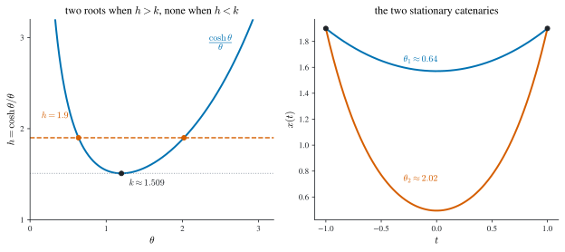
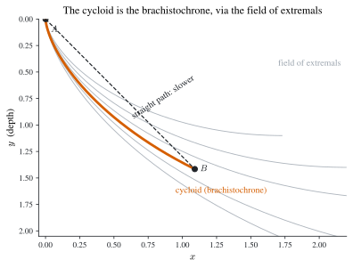
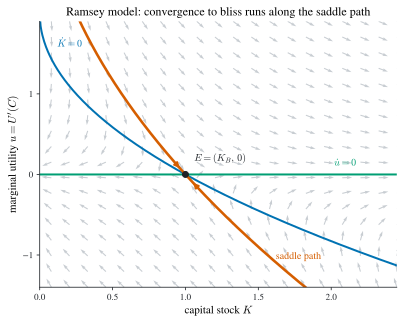
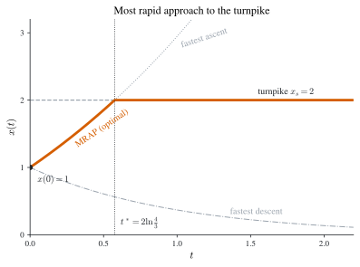

3 Calculus of Variations
The calculus of variations is the classical entry point to dynamic optimization. Where differential calculus studies how a function of numbers changes when its argument is perturbed, the calculus of variations studies how a functional — a number assigned to a whole function — changes when that function is perturbed. The decision variable is an entire path \(x(\cdot)\), and we ask which path makes an integral
\[ J[x] \;=\; \int_0^T F\bigl(t,\,x(t),\,\dot x(t)\bigr)\,\mathrm{d}t \]
as large as possible.
The subject grew out of three eighteenth-century problems — the brachistochrone (the curve of fastest descent), the catenary (the shape of a hanging chain, equivalently the minimal surface of revolution), and the isoperimetric problem (maximal area for given perimeter). Euler and Lagrange turned these puzzles into a method; in the twentieth century Pontryagin and Rockafellar extended it into optimal control. Its first economic uses were Ramsey’s theory of saving (Ramsey 1928) and Hotelling’s theory of exhaustible resources (Hotelling 1931), both of which reappear below.
Two necessary conditions organize the whole chapter:
- the Euler equation — a local condition: an optimal path cannot be improved by a small bump at any interior instant while the endpoints are held fixed;
- the transversality condition (TVC) — a boundary condition: at any free endpoint the optimal path must leave (or arrive) in a particular direction.
Sufficient conditions are weaker and rest on concavity; we treat them in Section 3.3.
Reduction of the Bolza problem. We treat only the standard problem with integrand \(F(t,x,\dot x)\), because a Bolza problem — one carrying an extra terminal salvage term \(G\bigl(T,x(T)\bigr)\) — reduces to it whenever \(x(0)\) is fixed and \(G\) is smooth. Indeed \[ \int_0^T F\,\mathrm{d}t + G\bigl(T,x(T)\bigr) = \int_0^T\Bigl(F + \tfrac{\mathrm{d}}{\mathrm{d}t}G\Bigr)\mathrm{d}t + G\bigl(0,x(0)\bigr) = \int_0^T\bigl(F + G_t + G_x\dot x\bigr)\mathrm{d}t + \text{const}, \] so maximizing the left-hand side is the same as maximizing \(\int_0^T(F+G_t+G_x\dot x)\,\mathrm{d}t\).
3.1 The Euler equation and the Legendre condition
The standard variational problem is
\[ \max_{x\in\mathcal{A}} \;\; J[x]=\int_0^T F(t,x,\dot x)\,\mathrm{d}t, \tag{3.1}\]
where \(F\) has continuous second partial derivatives and \(\mathcal{A}\) is a class of admissible paths. Different boundary data give different admissible classes — for example
\[ \mathcal{A}=\bigl\{x\in C^1[0,T] : x(0)=x_0,\ x(T)=x_1 \bigr\}, \qquad \mathcal{A}=\bigl\{x\in C^1[0,T] : x(0)=x_0 \bigr\}, \]
the first with both endpoints pinned, the second with the terminal value free. A path \(x\in\mathcal{A}\) that maximizes \(J\) is a solution; a problem may have none, one, or many.
The guiding analogy is ordinary calculus. If a smooth \(f:\mathbb{R}^n\to\mathbb{R}\) has a local maximum at \(x_0\), then for every direction \(y\) the scalar function \(\varepsilon\mapsto f(x_0+\varepsilon y)\) has a local maximum at \(\varepsilon=0\), so
\[ 0=\frac{\mathrm{d}}{\mathrm{d}\varepsilon}f(x_0+\varepsilon y)\Big|_{0}=y^\top\nabla f(x_0), \qquad 0\ge\frac{\mathrm{d}^2}{\mathrm{d}\varepsilon^2}f(x_0+\varepsilon y)\Big|_{0}=y^\top\nabla^2 f(x_0)\,y, \]
giving \(\nabla f(x_0)=0\) and \(\nabla^2 f(x_0)\) negative semidefinite. Transplanting this idea to paths is Lagrange’s method, our first derivation of the Euler equation.
The Euler equation
Theorem 3.1 (Euler equation and Legendre condition) Let \(x\) solve the standard problem Equation 3.1 with both endpoints fixed, and suppose \(x\) is interior to \(\mathcal{A}\). Then along \(x\),
\[ F_x\bigl(t,x,\dot x\bigr)=\frac{\mathrm{d}}{\mathrm{d}t}\,F_{\dot x}\bigl(t,x,\dot x\bigr), \qquad t\in[0,T], \tag{3.2}\]
and the second-order (Legendre) necessary condition holds:
\[ F_{\dot x\dot x}\bigl(t,x,\dot x\bigr)\le 0,\qquad t\in[0,T]. \tag{3.3}\]
Proof. Take a smooth perturbation \(p\) with \(p(0)=p(T)=0\), so that \(x+\varepsilon p\in\mathcal{A}\) for all \(\varepsilon\in\mathbb{R}\), and set \(W(\varepsilon)=\int_0^T F(t,x+\varepsilon p,\dot x+\varepsilon\dot p)\,\mathrm{d}t\). Since \(x\) is optimal, \(W\) has a maximum at \(\varepsilon=0\), so \(W'(0)=0\) and \(W''(0)\le 0\).
Differentiating under the integral and integrating by parts, \[ W'(0)=\int_0^T\bigl(p\,F_x+\dot p\,F_{\dot x}\bigr)\mathrm{d}t =\underbrace{\bigl[p\,F_{\dot x}\bigr]_0^T}_{=0}+\int_0^T p\Bigl(F_x-\frac{\mathrm{d}}{\mathrm{d}t}F_{\dot x}\Bigr)\mathrm{d}t=0, \] the boundary term vanishing because \(p(0)=p(T)=0\). As this holds for every admissible \(p\), Lemma 3.1 below forces the integrand factor to vanish, which is Equation 3.2.
For the second-order condition, a second differentiation and one integration by parts give \[ W''(0)=\int_0^T\Bigl[p^2\Bigl(F_{xx}-\frac{\mathrm{d}}{\mathrm{d}t}F_{x\dot x}\Bigr)+\dot p^{\,2}F_{\dot x\dot x}\Bigr]\mathrm{d}t\le 0 , \] and Lemma 3.2 forces \(F_{\dot x\dot x}\le 0\). \(\;\blacksquare\)
The two technical lemmas the proof rests on are the fundamental lemmas of the calculus of variations.
Lemma 3.1 (Fundamental lemma (du Bois-Reymond)) If \(A\) is continuous on \([0,T]\) and \(\int_0^T p(t)A(t)\,\mathrm{d}t\le 0\) for every smooth \(p\) with \(p(0)=p(T)=0\), then \(A\equiv 0\) on \([0,T]\).
Lemma 3.2 (Second fundamental lemma) If \(A,B\) are continuous and \(\int_0^T\bigl[A(t)p^2+B(t)\dot p^{\,2}\bigr]\mathrm{d}t\le 0\) for every smooth \(p\) with \(p(0)=p(T)=0\), then \(B\le 0\) on \([0,T]\).
Proof. For Lemma 3.1, suppose \(A(t^\ast)>0\) at some interior \(t^\ast\); by continuity \(A>0\) on a small interval \(I\), and choosing a bump \(p\ge 0\) supported in \(I\) makes \(\int pA>0\), a contradiction (the symmetric argument handles \(A(t^\ast)<0\)). For Lemma 3.2, concentrate a rapidly oscillating \(p\) near \(t^\ast\): scaling \(p(t)=\phi\!\bigl((t-t^\ast)/\delta\bigr)\) makes \(\int B\dot p^2\) dominate \(\int Ap^2\) as \(\delta\to 0\), so \(B(t^\ast)\le 0\). \(\;\blacksquare\)
Expanding the total derivative in Equation 3.2 shows the Euler equation is, in general, a second-order ODE,
\[ F_x = F_{t\dot x} + F_{x\dot x}\,\dot x + F_{\dot x\dot x}\,\ddot x, \tag{3.4}\]
whose general solution carries two free constants pinned down by the two boundary conditions. A path satisfying Equation 3.2 is a stationary point of the functional; like a critical point in ordinary calculus it may be a maximum, a minimum, or neither.
Using Legendre in reverse. The Legendre condition is most useful as an exclusion test: any path on which \(F_{\dot x\dot x}>0\) somewhere cannot be a maximizer. For example, \(\max\int_0^T(xx'+x'^2)\,\mathrm{d}t\) has \(F_{\dot x\dot x}=2>0\) everywhere, so it has no solution; and \(\min\int_0^T(te^x+xx'^2)\,\mathrm{d}t\) with \(x(0)=-1,\ x(T)=1\) has \(F_{\dot x\dot x}=2x\), which changes sign along any admissible path, so it too has no solution. (For a minimization the relevant sign is reversed: \(F_{\dot x\dot x}\ge 0\).)
A second, more economic derivation makes the “no local improvement” idea explicit.
Discrete derivation. Hold the values \(x(t-\delta)\) and \(x(t+\delta)\) fixed; optimality of \(x\) means \(x(t)\) maximizes the two-period contribution \[ F\!\Bigl(t-\delta,\,x(t-\delta),\,\tfrac{y-x(t-\delta)}{\delta}\Bigr) +F\!\Bigl(t,\,y,\,\tfrac{x(t+\delta)-y}{\delta}\Bigr) \] over \(y\). The first-order condition is the discrete Euler equation \[ F_x\bigl(t,x(t),\dot x_t\bigr)=\frac1\delta\Bigl[F_{\dot x}\bigl(t,x(t),\dot x_t\bigr)-F_{\dot x}\bigl(t-\delta,x(t-\delta),\dot x_{t-\delta}\bigr)\Bigr], \] and letting \(\delta\to0\) recovers Equation 3.2. Reading \(x\) as a capital stock and \(\dot x\) as investment, this says the optimal investment plan cannot be improved by shifting a little investment between two adjacent instants: the marginal cost of doing so exactly offsets the marginal capital benefit.
Example 3.1 (A first Euler computation) For \(J[x]=\int_0^2(12tx+\dot x^2)\,\mathrm{d}t\) with \(x(0)=0,\ x(2)=8\), we have \(F_x=12t\) and \(F_{\dot x}=2\dot x\), so Equation 3.2 reads \(\ddot x=6t\), giving \(x=t^3+c_1t+c_2\). The boundary conditions force \(c_1=c_2=0\), so the unique stationary path is \(x=t^3\). Since \(F_{\dot x\dot x}=2>0\), this is a candidate minimum, not a maximum.
Special cases
Four recurring structures let one shortcut the second-order ODE.
Case I — \(F=F(t,\dot x)\) (no explicit \(x\)). Then \(F_x\equiv0\), so Equation 3.2 integrates once to a first integral
\[ F_{\dot x}\bigl(t,\dot x\bigr)=\text{const}. \tag{3.5}\]
Example 3.2 (Case I) For \(J[x]=\int_0^1(4t\dot x-\dot x^2)\,\mathrm{d}t\), \(x(0)=x(1)=0\): \(F_{\dot x}=4t-2\dot x\) is constant, so \(\dot x=2t+c_1\) and \(x=t^2+c_1t+c_2\). The endpoints give \(c_1=-1,\ c_2=0\), hence \(x=t^2-t\).
Case II — \(F=F(x,\dot x)\) (no explicit \(t\)). Then the Beltrami first integral holds:
\[ \dot x\,F_{\dot x}-F=\text{const}. \tag{3.6}\]
Indeed \(\frac{\mathrm{d}}{\mathrm{d}t}(\dot xF_{\dot x}-F)=\dot x\bigl(F_{x\dot x}\dot x+F_{\dot x\dot x}\ddot x-F_x\bigr)=\dot x\bigl(\tfrac{\mathrm{d}}{\mathrm{d}t}F_{\dot x}-F_x\bigr)=0\) by Equation 3.2. A caution: Equation 3.6 is only a consequence of Euler and can admit spurious solutions (those with \(\dot x\equiv0\)), so candidates must be checked against Equation 3.2 itself.
Example 3.3 (The catenary / minimal surface of revolution) Minimize \(J[x]=\int_{-1}^{1}x\sqrt{1+\dot x^2}\,\mathrm{d}t\) with \(x(-1)=x(1)=h>0\) — the area of the surface obtained by revolving the curve \(x(t)\) about the \(t\)-axis. Here \(F=x\sqrt{1+\dot x^2}\), so \(F_{\dot x}=x\dot x/\sqrt{1+\dot x^2}\) and Equation 3.6 gives, after simplification, \(1+\dot x^2=\theta^2x^2\) for a constant \(\theta>0\). Differentiating, \(\dot x(\ddot x-\theta^2x)=0\); the root \(\dot x\equiv0\) fails Equation 3.2 and is discarded, leaving \(\ddot x=\theta^2x\) with \[ x=\frac{h}{e^{\theta}+e^{-\theta}}\bigl(e^{\theta t}+e^{-\theta t}\bigr) =\frac{h\cosh(\theta t)}{\cosh\theta}, \] a catenary. Substituting back into \(1+\dot x^2=\theta^2x^2\) forces \(\theta\) to satisfy
\[ \cosh\theta=\theta h . \tag{3.7}\]
As the left panel of Figure 3.1 shows, \(h=\cosh\theta/\theta\) has a minimum \(k\approx1.509\); hence Equation 3.7 has two, one, or no roots according as \(h>k\), \(h=k\), or \(h<k\). The problem therefore has two, one, or zero stationary catenaries — a vivid reminder that a variational problem need not have a solution, and may have several.

Case III — \(F=A(t,x)+B(t,x)\dot x\) (linear in \(\dot x\)). Now \(F_{\dot x\dot x}=0\), the \(\ddot x\) term in Equation 3.4 drops out, and the Euler equation degenerates to the algebraic identity
\[ A_x=B_t. \tag{3.8}\]
This is not an ODE: it either pins \(x\) pointwise (and may then clash with the boundary data, so that no solution exists) or holds identically — in which case \(F\) is an exact differential, \(\int_0^T F\,\mathrm{d}t\) depends only on the endpoints, and every admissible path is optimal.
Example 3.4 (Case III, both faces) For \(J[x]=\int_0^1(2tx-x^2)\,\mathrm{d}t\), condition Equation 3.8 gives \(2t-2x=0\), i.e. \(x=t\); unless the endpoints happen to lie on this line the problem has no extremum. By contrast, for \(J[x]=\int_0^1(x+t\dot x)\,\mathrm{d}t\) the integrand is \(\frac{\mathrm{d}}{\mathrm{d}t}(tx)\), so \(J=[tx]_0^1=x(1)\) regardless of the interior path: every admissible path is stationary.
Case IV — \(F=F(\dot x)\). A special case of Case I: \(F_{\dot x}=\text{const}\) has finitely many roots, so \(\dot x\) is constant and \(x\) is a straight line \(x=c_1t+c_2\). This is the reason the shortest curve between two points is a line: minimizing \(\int_0^T\sqrt{1+\dot x^2}\,\mathrm{d}t\) yields a stationary line, and the boundary data select it uniquely.
Two generalizations
Several states. For \(J[x]=\int_0^T F(t,x_1,\dots,x_n,\dot x_1,\dots,\dot x_n)\,\mathrm{d}t\) with all endpoints fixed, perturbing one coordinate at a time gives a system of Euler equations, \[ F_{x_k}=\frac{\mathrm{d}}{\mathrm{d}t}F_{\dot x_k},\qquad k=1,\dots,n, \tag{3.9}\] and the Legendre condition becomes: the Hessian \(F_{\dot x\dot x}\) (in the velocity variables) is negative semidefinite.
Higher derivatives. If \(F\) depends on \(x,\dot x,\dots,x^{(n)}\), the analogous integration by parts \(n\) times yields the Euler–Poisson equation \[ F_x-\frac{\mathrm{d}}{\mathrm{d}t}F_{x^{(1)}}+\frac{\mathrm{d}^2}{\mathrm{d}t^2}F_{x^{(2)}}-\cdots+(-1)^n\frac{\mathrm{d}^n}{\mathrm{d}t^n}F_{x^{(n)}}=0, \tag{3.10}\] a \(2n\)-th order ODE requiring \(2n\) boundary conditions. For instance \(\min\int_0^1\ddot x^2\,\mathrm{d}t\) with \(x(0)=\dot x(0)=0,\ x(1)=1,\ \dot x(1)=3\) has Euler–Poisson equation \(x^{(4)}=0\), whence \(x=t^3\).
3.2 The concept of variation
The Euler equation came from perturbations that vanish at the endpoints. To handle free boundaries we must let the perturbation move the endpoints too, which leads to the notion of the first variation of a functional — the exact analogue of the differential \(\mathrm{d}f=f'(x)\,\mathrm{d}x\).
The first variation
Fix an admissible path \(x\) on \([t_0,t_1]\) and compare it with a neighbouring admissible path \(y\), writing \(h=y-x\) and allowing the endpoints of \(y\) to sit at \(t_0+\delta t_0\) and \(t_1+\delta t_1\). Keeping only first-order terms in the small quantities \(h,\delta t_0,\delta t_1\),
\[ J[y]-J[x]=\int_{t_0+\delta t_0}^{t_1+\delta t_1}\!\!F(t,y,\dot y)\,\mathrm{d}t-\int_{t_0}^{t_1}\!\!F(t,x,\dot x)\,\mathrm{d}t . \]
Splitting the outer integral at \(t_0,t_1\), expanding \(F(t,y,\dot y)\) around \((x,\dot x)\), and integrating the \(\dot h\) term by parts gives the first variation
\[ \delta J=\Bigl[(F-\dot xF_{\dot x})\,\delta t+F_{\dot x}\,\delta x\Bigr]_{t_0}^{t_1} +\int_{t_0}^{t_1}\Bigl(F_x-\frac{\mathrm{d}}{\mathrm{d}t}F_{\dot x}\Bigr)h\,\mathrm{d}t, \tag{3.11}\]
where the endpoint variations of the path value are \[ \delta x_i=h(t_i)+\dot x(t_i)\,\delta t_i,\qquad i=0,1, \] the difference between the perturbed path’s endpoint and the original’s. Equation Equation 3.11 is the master formula of the chapter: optimality requires \(\delta J\le0\) for all admissible variations, and both the Euler equation and every transversality condition fall out of it.
Indeed, restricting first to variations that fix the time interval and the endpoint values (so all bracketed terms vanish) returns the interior condition \(\int(F_x-\frac{\mathrm d}{\mathrm dt}F_{\dot x})h\le0\) and hence Equation 3.2. Given the Euler equation, the integral term drops and, with the initial point fixed, optimality reduces to
\[ \delta J=(F-\dot xF_{\dot x})\big|_{t_1}\delta t_1+F_{\dot x}\big|_{t_1}\delta x_1\le 0 . \tag{3.12}\]
Reading Equation 3.12 off for each type of free terminal yields the transversality conditions.
Transversality conditions
Theorem 3.2 (Transversality conditions) For \(\max\int_0^T F(t,x,\dot x)\,\mathrm{d}t\) with \(x(0)=x_0\) fixed, the optimal path satisfies the Euler equation Equation 3.2 together with the boundary condition in the table, according to how the terminal is constrained.
| Terminal constraint | Transversality condition |
|---|---|
| \(T\) fixed, \(x(T)=x_1\) fixed | (none — two endpoints pin the ODE) |
| \(T\) fixed, \(x(T)\) free | \(F_{\dot x}\big|_{T}=0\) |
| \(T\) free, \(x(T)=x_1\) fixed | \(\bigl(F-\dot xF_{\dot x}\bigr)\big|_{T}=0\) |
| \(T\) free, \(x(T)\) free | \(F_{\dot x}\big|_{T}=0\) and \(F\big|_{T}=0\) |
| \(T\) free, \(x(T)=\varphi(T)\) on a curve | \(\bigl(F+(\dot\varphi-\dot x)F_{\dot x}\bigr)\big|_{T}=0\) |
| \(T\) fixed, \(x(T)\ge x_1\) | \(F_{\dot x}\big|_{T}\le0,\ x(T)\ge x_1,\ F_{\dot x}\big|_{T}\bigl(x(T)-x_1\bigr)=0\) |
| \(T\le t_1\), \(x(T)=x_1\) fixed | \(\bigl(F-\dot xF_{\dot x}\bigr)\big|_{T}\ge0,\ T\le t_1,\ \bigl(F-\dot xF_{\dot x}\bigr)\big|_{T}(T-t_1)=0\) |
Proof. Each line specializes Equation 3.12. Terminal on a curve \(\varphi\), \(T\) free: the endpoint must track the curve, so \(\delta x(T)=\dot\varphi(T)\,\delta T\) and \(\delta J=\bigl(F+(\dot\varphi-\dot x)F_{\dot x}\bigr)\big|_T\,\delta T\); since \(\delta T\) is a free real, its coefficient must vanish. Inequality terminal \(x(T)\ge x_1\), \(T\) fixed: now \(\delta x(T)\ge0\) when \(x(T)=x_1\) binds and is free otherwise, so \(F_{\dot x}\big|_T\delta x(T)\le0\) for all admissible \(\delta x(T)\) gives \(F_{\dot x}\big|_T\le 0\) with complementary slackness — the variational KKT condition. The mixed-sign cases (\(T\le t_1\)) follow identically, the one-sided constraint on \(\delta T\) producing the inequality. \(\;\blacksquare\)
The geometric content is sharpest in the two classic distance problems.
Example 3.5 (Shortest distance from a point to a line) Minimize \(\int_0^1\sqrt{1+\dot x^2}\,\mathrm{d}t\) with \(x(0)=0\) and \(x(1)\) free (the terminal lies anywhere on the vertical line \(t=1\)). By Case IV the stationary path is a line \(x=ct\), and the free-terminal TVC \(F_{\dot x}\big|_{t=1}=0\) gives \(c/\sqrt{1+c^2}=0\), i.e. \(c=0\). So the optimal path is \(x\equiv0\): Euler makes it straight, and transversality makes it hit the line perpendicularly.
Example 3.6 (Shortest distance from a point to the curve \(xy=1\)) Minimize \(\int_0^T\sqrt{1+\dot x^2}\,\mathrm{d}t\) from the origin to the curve \(x(T)=1/T\), with \(T\) free (work in the first quadrant by symmetry). The stationary path is again a line \(x=ct\) through the origin, and the terminal-on-a-curve TVC with \(\varphi(t)=1/t\) gives, after simplification, \(c=T^2\); combined with \(cT=1/T\) this yields \(c=T=1\) and the path \(x=t\), at distance \(\sqrt2\) — exactly the elementary answer (the nearest point is \((1,1)\)). Because \(F=\sqrt{1+\dot x^2}\) is convex in \((x,\dot x)\), the value \(V(T)=\sqrt{T^2+T^{-2}}\) of the \(T\)-fixed problem is minimized at \(T=1\), confirming global optimality.
Further generalizations
For a single state the free-terminal conditions collect into the unified inequality
\[ \bigl(F-\dot xF_{\dot x}\bigr)\big|_{T}\,\Delta T+F_{\dot x}\big|_{T}\,\Delta x(T)\le0, \tag{3.13}\]
with \((\Delta T,\Delta x(T))\) ranging over the directions the boundary type permits. With several states the natural generalization holds, \[ \Bigl(F-\sum_k\dot x_kF_{\dot x_k}\Bigr)\Big|_{T}\Delta T+\sum_kF_{\dot x_k}\big|_{T}\Delta x_k(T)\le0, \] and for higher-order problems each derivative contributes its own term. Finally, when the initial point is also free the same algebra applies at \(t_0\), with the inequality reversed (an initial perturbation enters \(J\) with the opposite sign): e.g. with both ends on curves \(x(t_0)=\varphi(t_0)\), \(x(T)=\psi(T)\) and both times free, \[ \bigl(F+(\dot\varphi-\dot x)F_{\dot x}\bigr)\big|_{t_0}=0, \qquad \bigl(F+(\dot\psi-\dot x)F_{\dot x}\bigr)\big|_{T}=0 . \]
3.3 Sufficient conditions
Euler and the TVC are necessary; concavity makes them sufficient.
Theorem 3.3 (Concavity sufficiency) Suppose \(T\) is fixed, \(x(0)=x_0\), and \(F\) is concave in \((x,\dot x)\) jointly. Then any admissible path \(x\) satisfying the Euler equation Equation 3.2 and the relevant transversality condition is optimal.
Proof. Let \(y\) be any admissible path and \(p=y-x\), with \(p(0)=0\). Concavity gives the supporting inequality \(F(t,y,\dot y)-F(t,x,\dot x)\le F_x\,p+F_{\dot x}\dot p\), so \[ J[y]-J[x]\le\int_0^T\bigl(F_x\,p+F_{\dot x}\dot p\bigr)\mathrm{d}t =\int_0^T p\Bigl(F_x-\frac{\mathrm{d}}{\mathrm{d}t}F_{\dot x}\Bigr)\mathrm{d}t+\bigl[F_{\dot x}p\bigr]_0^T =F_{\dot x}p\big|_{T}\le0, \] the interior integral vanishing by Euler and the boundary term by the TVC. Hence \(J[y]\le J[x]\). \(\;\blacksquare\)
When \(T\) is itself free, solve the \(T\)-fixed problem for each horizon, obtain its value \(V(T)\), and then maximize \(V(T)\) over \(T\) — a one-dimensional problem we revisit through comparative statics in the optimal-control chapter.
3.4 Fields of extremals and the brachistochrone
Concavity (Theorem 3.3) is the cheap sufficiency test, but many classical problems are not concave in \((x,\dot x)\). The deeper sufficiency theory — due to Weierstrass — replaces global concavity by a local convexity condition along a field of extremals. We develop it on the problem that started the subject: the brachistochrone.
A bead slides without friction from \(A=(x_1,y_1)\) to \(B=(x_2,y_2)\) under gravity, starting with speed \(v_1\) at \(A\) (the \(y\)-axis points down). Energy conservation gives speed \(v=\sqrt{2g(y-\alpha)}\) with \(\alpha=y_1-v_1^2/2g\), and since \(v=\mathrm{d}s/\mathrm{d}t\) the descent time is
\[ I[y]=\frac{1}{\sqrt{2g}}\int_{x_1}^{x_2}\sqrt{\frac{1+\dot y^2}{\,y-\alpha\,}}\;\mathrm{d}x, \qquad y>\alpha . \tag{3.14}\]
The integrand \(F=\sqrt{(1+\dot y^2)/(y-\alpha)}\) has no explicit \(x\), so the Beltrami integral Equation 3.6 applies: \(F-\dot yF_{\dot y}=\text{const}\). A short computation collapses it to
\[ (y-\alpha)\bigl(1+\dot y^2\bigr)=2b=\text{const}, \tag{3.15}\]
whose solution is a cycloid — the curve traced by a point on a circle of radius \(b\) rolling beneath the line \(y=\alpha\):
\[ x-a=b(\varphi-\sin\varphi),\qquad y-\alpha=b(1-\cos\varphi). \tag{3.16}\]
(One checks Equation 3.16 satisfies Equation 3.15: \(\dot y=\sin\varphi/(1-\cos\varphi)\) gives \(1+\dot y^2=2/(1-\cos\varphi)\), and \((y-\alpha)(1+\dot y^2)=2b\).) Tuning the scale \(b\) and the shift \(a\), a unique cycloid passes through \(A\) and \(B\); call it the extremal \(E\). Euler has delivered a candidate — but is the cycloid genuinely the fastest path, when \(F\) is nowhere concave in \((y,\dot y)\)? The field method answers yes.
The field of extremals. Fixing \(b\) and letting \(a\) vary sweeps out a one-parameter family of cycloids that covers the region \(y>\alpha\) with exactly one curve through each point (Figure 3.2). This is a field: it assigns to each point \(M=(x,y)\) the slope \(p(x,y)\) of the unique field extremal through it, i.e. a direction field \((1,p(x,y))\). The competitor curves are compared not to \(E\) directly but to the field.
The engine is the following path-independence, the variational analogue of a conservative line integral.
Theorem 3.4 (Hilbert invariant integral) In a field of extremals with slope \(p(x,y)\), the line integral \[ I^\ast[C]=\int_{C}\Bigl[\bigl(F-pF_{\dot y}\bigr)\big|_{(x,y,p)}\,\mathrm{d}x+F_{\dot y}\big|_{(x,y,p)}\,\mathrm{d}y\Bigr] \] depends only on the endpoints of \(C\), not on the path \(C\) inside the field. Along any field extremal it equals the ordinary action: \(I^\ast[E]=I[E]\).
Proof. The integrand is \(P\,\mathrm{d}x+Q\,\mathrm{d}y\) with \(P=F-pF_{\dot y}\), \(Q=F_{\dot y}\) evaluated at the field slope \(p(x,y)\). A direct computation using the Euler equation satisfied by the field extremals shows \(P_y=Q_x\), so the form is closed and (on the simply-connected field region) exact; its integral is therefore path-independent. Along an extremal \(\dot y=p\), and \(P\,\mathrm{d}x+Q\,\mathrm{d}y=(F-pF_{\dot y})\mathrm{d}x+F_{\dot y}\,p\,\mathrm{d}x=F\,\mathrm{d}x\), recovering \(I[E]\). \(\;\blacksquare\)
Theorem 3.5 (Weierstrass sufficiency) Let \(E\) be a field extremal from \(A\) to \(B\), and let \(C\) be any other admissible curve from \(A\) to \(B\) lying in the field. Then \[ I[C]-I[E]=\int_{C}\mathcal{E}\bigl(x,y,p,\dot y\bigr)\,\mathrm{d}x, \qquad \mathcal{E}=F(x,y,\dot y)-F(x,y,p)-(\dot y-p)\,F_{\dot y}(x,y,p), \] where \(\mathcal{E}\) is the Weierstrass excess function. If \(\mathcal{E}\ge 0\) throughout the field (which holds whenever \(F\) is convex in \(\dot y\)), then \(E\) is a minimizer; the inequality is strict unless \(C\) coincides with \(E\).
Proof. Since \(A,B\) are shared, Theorem 3.4 lets us evaluate the invariant integral along \(C\) instead of \(E\): \(I[E]=I^\ast[E]=I^\ast[C]\). Hence \[ I[C]-I[E]=\int_C F(x,y,\dot y)\,\mathrm{d}x-\int_C\bigl[(F-pF_{\dot y})\,\mathrm{d}x+F_{\dot y}\,\mathrm{d}y\bigr] =\int_C\bigl[F(x,y,\dot y)-F(x,y,p)-(\dot y-p)F_{\dot y}(x,y,p)\bigr]\mathrm{d}x, \] using \(\mathrm{d}y=\dot y\,\mathrm{d}x\) along \(C\). This is \(\int_C\mathcal{E}\,\mathrm{d}x\), and convexity of \(F\) in \(\dot y\) makes \(\mathcal{E}\ge0\) (it is the gap between \(F\) and its tangent in \(\dot y\) at \(p\)). \(\;\blacksquare\)
For the brachistochrone the excess function takes a transparent geometric form. Writing the action as \(I[C]=\int_C \mathrm{d}s/\sqrt{y-\alpha}\) (dropping \(1/\sqrt{2g}\)) and letting \(\theta\) be the angle at \(M\) between the competitor \(C\) and the field direction, the Hilbert integral evaluates to \(I^\ast[C]=\int_C \cos\theta\,\mathrm{d}s/\sqrt{y-\alpha}\), so
\[ I[C]-I[E]=\int_{C}\frac{1-\cos\theta}{\sqrt{\,y-\alpha\,}}\;\mathrm{d}s\;\ge\;0, \tag{3.17}\]
with equality only when \(\cos\theta\equiv1\) — that is, when \(C\) is everywhere tangent to the field and hence is the cycloid \(E\) (Xie 2009). The cycloid is therefore the strict minimizer: every other descent path is slower (Figure 3.2).

3.5 Infinite-horizon problems
Most economic problems run forever. The infinite-horizon problem
\[ \max_x\ \int_0^\infty F(t,x,\dot x)\,\mathrm{d}t,\qquad x(0)=x_0, \tag{3.18}\]
requires first that admissible paths make the integral converge. The interior condition is unchanged — the optimal path still solves the Euler equation Equation 3.2 — but the boundary condition now lives “at infinity”, and which limit form holds (\(F_{\dot x}\big|_\infty=0\), \((F-\dot xF_{\dot x})\big|_\infty=0\), or \(xF_{\dot x}\big|_\infty=0\)) is genuinely subtle and was settled only later (Michel 1982; Kamihigashi 2001).
The workhorse case is the autonomous discounted problem \[ \max_x\ \int_0^\infty e^{-\rho t}F(x,\dot x)\,\mathrm{d}t,\qquad x(0)=x_0,\ \rho>0, \tag{3.19}\] whose Euler equation is the second-order autonomous system \[ F_x=-\rho F_{\dot x}+F_{x\dot x}\dot x+F_{\dot x\dot x}\ddot x, \tag{3.20}\] with steady state \(\bar x\) determined by \(F_x(\bar x,0)+\rho F_{\dot x}(\bar x,0)=0\). The economic transversality condition usually imposed is \[ \lim_{t\to\infty}e^{-\rho t}\,x(t)\,F_{\dot x}\bigl(x(t),\dot x(t)\bigr)=0, \tag{3.21}\] which says the present value of the capital stock, priced at its marginal value \(F_{\dot x}\), is asymptotically exhausted.
Example 3.7 (A linear–quadratic example) Minimize \(\int_0^\infty e^{-\rho t}\bigl(x^2+ax+b\dot x+c\dot x^2\bigr)\,\mathrm{d}t\) with \(x(0)=x_0\), \(x(\infty)\) finite, \(c>0\). The Euler equation Equation 3.20 is \(\ddot x-\rho\dot x-x/c=(a+\rho b)/(2c)\), with steady state \(\bar x=-(a+\rho b)/2\) and characteristic roots \(r_{1}>0>r_{2}\). Finiteness of \(x(\infty)\) kills the explosive root (\(c_1=0\)), and \(x(0)=x_0\) fixes the rest: \[ x(t)=(x_0-\bar x)e^{r_2 t}+\bar x,\qquad \dot x=r_2(x-\bar x). \] The optimum is an adjustment path: \(x\) approaches \(\bar x\) at a rate proportional to the remaining gap. (Both candidate TVCs hold along it, and Theorem 3.6 below confirms optimality.) Contrast \(\max\int_0^\infty(2x-x^2-\dot x-\dot x^2)\,\mathrm{d}t\), \(x(0)=2\): its only Euler-and-finiteness candidate \(x=e^{-t}+1\) makes the integral diverge, so that problem has no solution — convergence is a real constraint, not a formality.
A sufficiency theorem adapted to the infinite horizon closes the necessary–sufficient gap.
Theorem 3.6 (Infinite-horizon sufficiency) Let \(F\) be concave in \((x,\dot x)\) and let \(x\) satisfy the Euler equation. If, for every admissible \(y\), \[ \liminf_{t\to\infty}F_{\dot x}\bigl(t,x,\dot x\bigr)\bigl(y(t)-x(t)\bigr)\le0, \] then \(x\) is optimal. In particular this holds when \(x\) obeys the transversality condition \(\lim_{t\to\infty}x(t)F_{\dot x}=0\) and every admissible \(y\) has \(\liminf_t F_{\dot x}\,y(t)\le0\).
Proof. As in Theorem 3.3, for any admissible \(y\) and \(p=y-x\) and any horizon \(T\), \(\int_0^T(F(t,y,\dot y)-F(t,x,\dot x))\,\mathrm{d}t\le F_{\dot x}p\big|_T\). Letting \(T\to\infty\) and using the \(\liminf\) hypothesis gives \(J[y]-J[x]\le0\). \(\;\blacksquare\)
Phase-diagram analysis: the Ramsey model
When the Euler equation cannot be solved in closed form — the norm — its qualitative behaviour is read off a phase diagram. The canonical example is Ramsey’s problem of optimal saving (Ramsey 1928).
A central planner chooses consumption \(C\) and capital \(K\) to maximize social welfare \(\int_0^\infty\bigl(U(C)-D(L)\bigr)\,\mathrm{d}t\), where \(U'>0>U''\) and \(D\) is the disutility of labour, subject to the resource constraint \(C=Q(K)-\dot K\). To respect intergenerational equity Ramsey used no discounting; to keep the integral finite he reckoned welfare against the maximal attainable bliss level \(B\), turning the problem into
\[ \min_K\ \int_0^\infty\bigl(B-U(C)\bigr)\,\mathrm{d}t,\qquad C=Q(K)-\dot K,\ K(0)=K_0, \tag{3.22}\]
(suppressing labour). With \(F=B-U(C)\) we get \(F_K=-U'(C)Q'(K)\) and \(F_{\dot K}=U'(C)\), so the Euler equation is \(-U'(C)Q'(K)=\frac{\mathrm{d}}{\mathrm{d}t}U'(C)\). Writing \(u=U'(C)\) (so that \(C=C(u)\) with \(C'<0\), and \(C\to C_B\) as \(u\to0\)) reduces it to the first-order system
\[ \dot K=Q(K)-C(u),\qquad \dot u=-u\,Q'(K). \tag{3.23}\]
The null-clines are \(\dot K=0\Leftrightarrow Q(K)=C(u)\) and \(\dot u=0\Leftrightarrow u=0\) (since \(Q'>0\)); they meet at the steady state \(E=(K_B,0)\), the bliss state. Linearizing Equation 3.23 at \(E\) gives a Jacobian with one positive and one negative eigenvalue, so \(E\) is a saddle point: there is a unique convergent trajectory — the saddle path — and the planner must choose the initial consumption that places the economy on it.
Figure 3.3 draws the diagram for a tractable specification (\(Q(K)=2\sqrt K\), \(U'(C)=C_B-C\)), for which \(E=(1,0)\) exactly and the unstable manifold lies along the \(K\)-axis, matching the general analysis.

3.6 Most rapid approach paths
A striking degeneracy occurs when the integrand is linear in \(\dot x\):
\[ \max_x\ \int_0^\infty e^{-\rho t}\bigl[M(x)+N(x)\dot x\bigr]\,\mathrm{d}t, \qquad x(0)=x_0,\ A(x)\le\dot x\le B(x). \tag{3.24}\]
By Case III the Euler equation collapses to the algebraic singular condition
\[ M'(x)+\rho N(x)=0, \tag{3.25}\]
(the \(N'(x)\dot x\) terms cancel), whose root \(x_s\) — the turnpike — carries no information about how to get there. Assume \(M'+\rho N\) is positive for \(x<x_s\) and negative for \(x>x_s\), that the bounds straddle zero at \(x_s\), and the technical tail condition \(\lim_{t\to\infty}e^{-\rho t}S(x(t))=0\) with \(S(x)=\int_{x_0}^x N\).
Theorem 3.7 (MRAP optimality) Under these assumptions the optimal policy is the most rapid approach path: move toward \(x_s\) at the maximal admissible speed — \(\dot x=B(x)\) if \(x_0<x_s\), \(\dot x=A(x)\) if \(x_0>x_s\) — and remain at \(x_s\) once reached.
Proof. Integrating the \(N(x)\dot x\) term by parts and using the tail condition, \(\int_0^\infty e^{-\rho t}[M+N\dot x]\,\mathrm{d}t=\int_0^\infty e^{-\rho t}[M(x)+\rho S(x)]\,\mathrm{d}t\). The integrand \(M+\rho S\) is increasing for \(x<x_s\) and decreasing for \(x>x_s\) (its derivative is \(M'+\rho N\)). By ODE comparison the speed bounds \(A(x)\le\dot x\le B(x)\) force every admissible path to stay at least as far from \(x_s\) as the maximal-speed approach \(z\): if \(x_0<x_s\), then any admissible \(x\) with \(\dot x\le B(x)\) obeys \(x(t)\le z(t)\le x_s\), where \(z\) solves \(\dot z=B(z)\) (fastest ascent), and symmetrically \(x(t)\ge z(t)\ge x_s\) for descent. Since \(M+\rho S\) rises up to \(x_s\) and falls past it, its value along \(z\) therefore dominates its value along any admissible \(x\) at every \(t\) — so the MRAP \(z\) maximizes the integral pointwise and is optimal. \(\;\blacksquare\)
Example 3.8 (An MRAP computation) Minimize \(\int_0^\infty e^{-t}\bigl[x^2-4\dot x\bigr]\,\mathrm{d}t\) with \(x(0)=1\) and \(-x\le\dot x\le x/2+1\). Here Equation 3.25 reads \(-2x+4=0\), so \(x_s=2\), and since \(x(0)=1<2\) the path ascends at top speed \(\dot x=x/2+1\), i.e. \(x=3e^{t/2}-2\), until it reaches the turnpike at \(t^\ast=2\ln\tfrac43\), then stays at \(x_s=2\) forever (Figure 3.4). Every admissible path lies between the fastest-ascent and fastest-descent envelopes, both of which satisfy the tail condition, so Theorem 3.7 applies.

The turnpike metaphor. To drive from \(A\) to \(B\) you get onto the motorway as fast as you can, cruise, and exit as near \(B\) as possible. The cruising road \(x\equiv x_s\) is itself infeasible unless you start on it; turnpike theorems — pervasive in growth and resource economics — formalize exactly this “rush to the turnpike” structure.
3.7 Other forms of constraint
Side constraints are handled by an Euler–Lagrange equation built from a Lagrangian \(L=F+\sum_k\lambda_k g_k\). Whether a solution of it solves the optimization problem must, as always, be checked by concavity or by the problem’s economic meaning.
Equality constraints \(g_k(t,x)=0\) (\(k=1,\dots,m<n\), independent) introduce multiplier functions \(\lambda_k(t)\), and the system \(L_{x_k}=\frac{\mathrm{d}}{\mathrm{d}t}L_{\dot x_k}\) holds alongside \(g_k=0\). Differential-equation constraints \(g_k(t,x,\dot x)=0\) are handled identically. Inequality constraints \(g_k(t,x,\dot x)\ge0\) bring non-negative multipliers \(\lambda_k\ge0\) with complementary slackness \(\lambda_k g_k=0\) — the variational KKT system.
Integral (isoperimetric) constraints \(\int_0^T G_k\,\mathrm{d}t=c_k\) reduce to ODE constraints by defining \(y_k(t)=\int_0^t G_k\) with \(y_k(0)=0,\ y_k(T)=c_k\); the resulting Euler–Lagrange equations show each multiplier is a constant, so one may simply form \(L=F-\sum_k\lambda_kG_k\) with constant \(\lambda_k\) and solve.
Example 3.9 (The isoperimetric problem yields a circle) Maximize \(\int_0^T x\,\mathrm{d}t\) subject to fixed arclength \(\int_0^T\sqrt{1+\dot x^2}\,\mathrm{d}t=c\) and \(x(0)=a,\ x(T)=b\). With constant multiplier \(\lambda\) and \(L=x-\lambda\sqrt{1+\dot x^2}\) (no explicit \(t\)), the Beltrami integral Equation 3.6 gives \((x-c_1)\sqrt{1+\dot x^2}=\lambda\), which integrates to \[ (x-c_1)^2+(t-c_2)^2=\lambda^2 : \] an arc of a circle, with \(c_1,c_2,\lambda\) fixed by the two endpoints and the length constraint. Maximal area under a curve of given length is bounded by a circular arc — the isoperimetric inequality in variational form.
3.8 Problems
The following are the chapter’s exercises; worked solutions to a selected, instructive subset follow in Section 3.9.
- Maximize \(\int_1^2(x+t\dot x-\dot x^2)\,\mathrm{d}t\) subject to \(x(2)=4\).
- Maximize \(\int_0^1(4t\dot x-\dot x^2)\,\mathrm{d}t\) subject to \(x(0)=0\).
- (Reduce to a standard variational problem by eliminating \(u\).) Minimize \(\int_0^1u^2\,\mathrm{d}t+x^2(1)\) subject to \(\dot x=x+u,\ x(0)=1\).
- (Eliminate \(u\).) Minimize \(\int_0^1(x-u^2)\,\mathrm{d}t\) subject to \(\dot x=x-u,\ x(0)=1\).
- Minimize \(\int_0^1\sqrt{t+t\dot x^2}\,\mathrm{d}t\) subject to \(x(0)=x_0,\ x(1)=x_1\).
- (Coal extraction.) A deposit holds reserve \(B>0\). Extracting at rate \(x(t)\) yields flow profit \(\ln x\); the discount rate is \(\rho>0\); after time \(T\) the coal is worthless. Find the optimal extraction path.
- Maximize \(\int_0^T(4x-\dot x^2)\,\mathrm{d}t\) subject to \(x(0)=0\) and \(0\le T\le1\) free.
- Maximize \(\int_0^T(4x-\dot x^2)\,\mathrm{d}t\) subject to \(x(0)=0,\ x(T)\le T^2-4,\ T\ge0\) free.
- Maximize \(\int_0^{2\pi}(x^2-\dot x^2)\,\mathrm{d}t\) subject to \(x(0)=x(2\pi)=0\). (i) Show every stationary path is \(x=c\sin t\) with value \(0\); check the Legendre condition and concavity. (ii) Show \(x=t-t^2/(2\pi)\) is admissible with positive value, and conclude about the sufficiency of Legendre and the existence of a maximum.
- Determine whether each functional has a maximum or minimum, and find the extremal value: (1) \(\int_{t_0}^{t_1}t\sqrt{1+\dot x^2}\,\mathrm{d}t\); (2) \(\int_{t_0}^{t_1}\dot x(\ln\dot x)^2\,\mathrm{d}t\), both with fixed endpoints.
- For \(\int_0^1(x^2+ax\dot x+b\dot x^2)\,\mathrm{d}t\) with \(x(0)=x_0,\ x(1)=x_1\): prove (1) if \(b=0\) the functional has no maximum and has a minimum only if \(x_0=x_1=0\); (2) if \(b>0\) it always has a minimum — even when \(4b<a^2\), i.e. when the integrand is not convex.
- Minimize \(\int_0^1e^{-\rho t}x\,\mathrm{d}t\) subject to \(\int_0^1\sqrt x\,\mathrm{d}t=1\), (1) by the multiplier method and (2) by the substitution \(y(t)=\int_0^t\sqrt x\).
- Maximize \(\int_0^\infty e^{-t}[x-x\dot x]\,\mathrm{d}t\) subject to \(x(0)=2,\ -x\le\dot x\le x/2\).
- Minimize \(\int_0^\infty e^{-t}[x^2-4\dot x]\,\mathrm{d}t\) subject to \(x(0)=1,\ -x\le\dot x\le2-x\).
- Minimize \(\int_0^\infty e^{-t}[x^2-2\dot x]\,\mathrm{d}t\) subject to \(x(0)=1,\ -x\le\dot x\le2x+1\). (Here the MRAP tail condition \(\lim_te^{-\rho t}S(x)=0\) fails for some admissible paths.)
- Minimize \(\int_0^1\sqrt{1+\dot x^2}\,\mathrm{d}t\) subject to \(\int_0^1x\,\mathrm{d}t=s>0\).
3.9 Selected solutions
Problem 1
\(F=x+t\dot x-\dot x^2\) gives \(F_x=1\) and \(F_{\dot x}=t-2\dot x\), so the Euler equation \(1=\frac{\mathrm{d}}{\mathrm{d}t}(t-2\dot x)=1-2\ddot x\) reduces to \(\ddot x=0\), hence \(x=\alpha t+\beta\). The terminal \(x(2)=4\) is fixed but \(x(1)\) is free, so the free-initial TVC \(F_{\dot x}\big|_{t=1}=0\) gives \(1-2\alpha=0\), i.e. \(\alpha=\tfrac12\); then \(\beta=3\) and \(x=\tfrac12 t+3\). Since \(F\) is concave in \((x,\dot x)\) (\(F_{\dot x\dot x}=-2\le0\) and there is no \(x^2\) term), Theorem 3.3 makes this the maximizer.
Problem 6 (Hotelling’s rule)
Let \(y(t)=\int_0^t x\,\mathrm{d}s\) be cumulative extraction, so \(\dot y=x\), \(y(0)=0\), \(y(T)=B\). The problem becomes \(\max\int_0^T e^{-\rho t}\ln\dot y\,\mathrm{d}t\), whose integrand depends only on \((t,\dot y)\) — Case I — so \(F_{\dot y}=e^{-\rho t}/\dot y\) is constant, giving \(x=\dot y=\kappa\,e^{-\rho t}\). The exhaustion constraint \(\int_0^T x\,\mathrm{d}t=B\) fixes \(\kappa=\dfrac{\rho B}{1-e^{-\rho T}}\), so \[ x(t)=\frac{\rho B}{1-e^{-\rho T}}\,e^{-\rho t}. \] Extraction declines geometrically at the discount rate — Hotelling’s rule that the marginal value of the resource rises at rate \(\rho\).
Problem 9 (Legendre is necessary, not sufficient)
\(F=x^2-\dot x^2\) gives Euler equation \(\ddot x+x=0\), so \(x=c\sin t\) (the condition \(x(2\pi)=0\) is automatic). Each such path has value \(\int_0^{2\pi}(x^2-\dot x^2)=c^2\int_0^{2\pi}(\sin^2t-\cos^2t)\,\mathrm{d}t=0\). The Legendre condition \(F_{\dot x\dot x}=-2\le0\) holds, yet the Hessian \(\bigl(\begin{smallmatrix}2&0\\0&-2\end{smallmatrix}\bigr)\) is indefinite, so \(F\) is not concave and Theorem 3.3 does not apply.
The admissible path \(x=t-t^2/(2\pi)\) has strictly positive value, beating the stationary value \(0\); indeed scaling \(x=A\sin(t/2)\) gives value \(\tfrac{3\pi}{4}A^2\to\infty\). So the stationary paths are not maxima, the Legendre condition is not sufficient, and the problem has no maximum (the supremum is \(+\infty\)).
Problem 12 (isoperimetric, two ways)
Multiplier method. Both functionals depend on \(x\) only, so with \(L=e^{-\rho t}x-\lambda\sqrt x\) the Euler–Lagrange equation is the pointwise \(e^{-\rho t}-\lambda/(2\sqrt x)=0\), giving \(\sqrt x=\tfrac{\lambda}{2}e^{\rho t}\). The constraint \(\int_0^1\sqrt x\,\mathrm{d}t=1\) fixes \(\lambda=\dfrac{2\rho}{e^{\rho}-1}\), so \[ x(t)=\Bigl(\frac{\rho}{e^{\rho}-1}\Bigr)^2 e^{2\rho t}. \]
Substitution method. With \(y(t)=\int_0^t\sqrt x\), \(\dot y=\sqrt x\), so \(x=\dot y^2\), \(y(0)=0,\ y(1)=1\), and the problem becomes \(\min\int_0^1e^{-\rho t}\dot y^2\,\mathrm{d}t\). This is Case I: \(F_{\dot y}=2e^{-\rho t}\dot y\) is constant, so \(\dot y=\tfrac{\kappa}{2}e^{\rho t}\), and \(y(1)-y(0)=1\) gives \(\kappa=\dfrac{2\rho}{e^{\rho}-1}\). Then \(x=\dot y^2\) reproduces the same answer — a useful check that the multiplier and substitution routes agree.
The remaining problems are left as practice; 13–15 are MRAP problems solved exactly as in Example 3.8 (note the cautionary tail-condition failure flagged in 15), and 7–8 are free-terminal problems handled by the TVCs of Theorem 3.2.